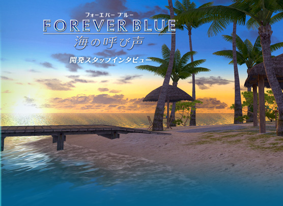
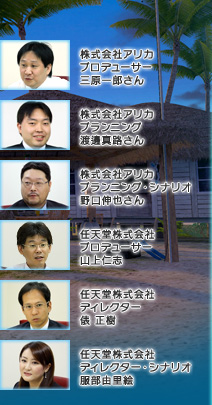
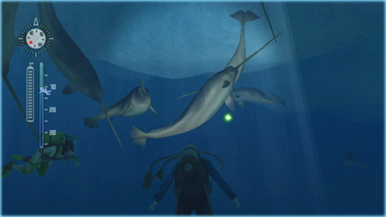
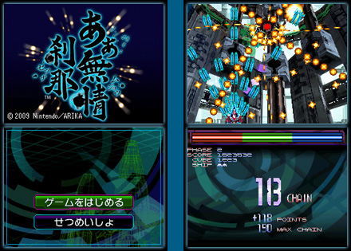

服部
今回はストーリーやゲーム性を強化したということで、前作の自由度の高さがなくなっているんじゃないかとご心配されているお客さまもいらっしゃるんじゃないかと思います。しかし、そのようなことはまったくありませんので、ご安心いただければと。それぞれの要素も非常に深くて、たとえば写真が好きで、それだけをやっていても十分に楽しめるようになっていますので。
野口
とにかく面白がってプレイしていただければ。本当に興味があるところから始めて、思う存分に自分だけの楽しみ方を発見してください。
渡邊
今回プレイヤーキャラクターのカスタマイズが充実していまして、髪型もオーソドックスなものからちょっと野心的なものまでさまざまな種類があります。ちょっとネタバレもあって言えませんが、セットになっている特殊な装備もあるので、そういったものでコーディネートして、ニンテンドーWi-Fiコネクションでお友だちに自慢したりしていただければと思います。
俵
ダイナミックなシーンがたくさん盛り込まれているんですが、それもいきなりその場所に行けばイベントが起こるというのではなくて、お話や冒険を楽しんで進めていただくと、そのご褒美として見られるような仕掛けになっています。自分が入り込んで参加できるというのは、テレビや映画で見るだけというより大きな感動を得られますので、そこをぜひ楽しんでいただければと思います。

三原
今回、写真をSDカードに保存するという部分で、任天堂さんに対してもかなりご無理を聞いてもらって、その結果大変素晴らしい写真が残せるようになりました。その写真をお友だちに自慢して、それがさらに他のお客さまにも興味を持ってもらって……まあ、本作が売れてくれたらうれしいです（笑）。
山上
私はシナリオを知っているはずなのに、クライマックスで泣きました（笑）。やっぱり映像を美しく作り上げてお話で盛り上げるというものづくりは楽しかったし、実際に遊んでみても楽しいです。ここまでのゲームを作っていただいたアリカさんとは、また一緒に海を題材としたものづくりをしたいですね。この映像とボリュームを楽しんでいただけると思っていますが、もちろん期待はずれというお叱りもあるかとは思います。今後もさらなる挑戦の機会を与えていただければと考えております。
N.O.M
今回の『FOREVER BLUE 海の呼び声』とほぼ同じタイミングで、アリカさんのニンテンドーDSiウェア『あぁ無情 刹那』の配信が開始されています。こちらは縦スクロール型のシューティングゲームという、まったく違ったタイプのゲームですよね。
三原
ハードに惚れちゃうんですよね。ニンテンドーDSiってすごいハードだよねと思っていて、それを一番わかりやすく表現できるのは、やっぱりシューティングゲームかなということで実験していたんです。背景は3Dで作って、敵がたくさん出てきてと。それで評価版をお見せしたら、わりとトントン拍子で。ランキングサーバとかも使えることになって、このボリュームでやりたいことはだいたい入れられて、満足してます。
山上
要するにアリカさんは極めるのが好きなんですよ。DSiでどれだけパワーが出るかなと作ってこられたので遊んでみたんです。そしたらすごく良い出来だったんです。
私もアクションパズルやシューティングが好きで、これは売りたいなと思ったので早速社内で話をしたところ、すぐに開発許可がおりました。その後の完成までもとても早く、すぐできてしまってビックリしました。
あんまりたくさん弾が出てくるんで、「そんな情け容赦のない攻撃をされたら無情ですやん」とか言っていたら、タイトルも『あぁ無情 刹那』になったんですよね（笑）。
三原
ハイスコアを目指すゲームなので、確かにうまくいかないとまあ「無情」感爆発なんです（笑）。
『FOREVER BLUE 海の呼び声』で癒されたり、『あぁ無情 刹那』で「無情」感を味わったり（笑）、どちらも楽しんでいただけたらうれしいですね。
